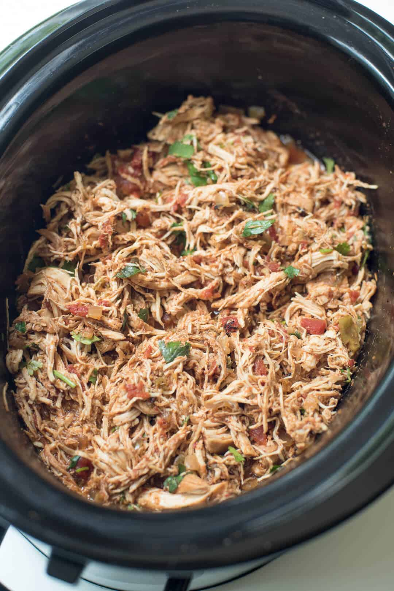

Chicken Tacos

Chicken Tacos
This is one of my family's go-to recipes. With few ingredients,
its easy to make this in a hurry in the instant pot, or let sit through
the day in the crockpot. It could be a keto friendly bowl, tacos, burritos,
empanadas, heck we have added canned veggies and turned it into a taco soup!
The versatility makes this a staple base to any household.
Ingredients
- 1 lb Chicken
- 1 can Rotel
- 1 pk Taco Seasoning
- 1 pk Cream Cheese
Directions
- Set cream cheese out to soften
- Combine Chicken, Rotel and Taco Seasoning into cooking element.
- Crockpot: low 8 hours
- Instant Pot: 30 min - force vent
- Once fully cooked; shred chicken and add softened cream cheese
Additional Ideas
- Add canned corn, beans, chicken stock to make soup
- Drain sauce, use chicken taco meat as stuffing for empanadas/taquitos
- Let cool and add to the top of a salad
- Add rice to the bottom of the instant pot, seperate chicken and have tacos + rice